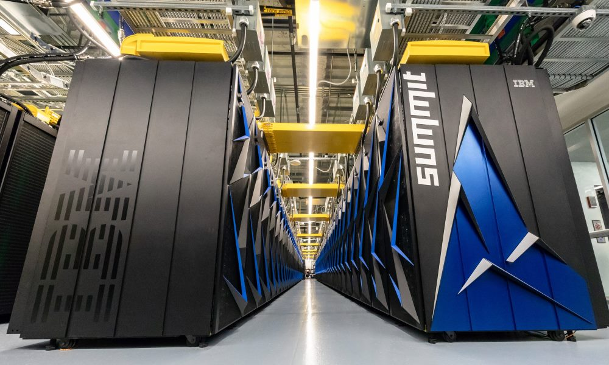

Cada seis meses, la lista Top 500 dice cuáles son las supercomputadoras más potentes del mundo. Y entre otros datos, Linux destaca como el sistema operativo de casi todos.

Hay muchas razones para el éxito de Linux en el mundo de la supercomputación, y la primera de ellas es que Linux es algo así como una variante más de los sistemas comerciales UNIX. Una especie de "primo hermano" de esas plataformas que dominaban ese mercado y que mantenían muchas similitudes con esta alternativa Open Source. El paso desde esos sistemas comerciales (y privativos/propietarios) hacia Linux, aunque ciertamente no fuera trivial, era mucho más asumible que tratar de migrar todas esas prestaciones a otras plataformas.
El crecimiento de Linux en cuota de mercado en el mundo de la supercomputación
A esas semejanzas y ese origen en común de los sistemas UNIX y Linux se le unen otros argumentos clave que han hecho de Linux la alternativa perfecta para este tipo de máquinas:
Modularidad: la capacidad de personalización y la versatilidad de Linux se basan en su legendaria modularidad. Linux es capaz de adaptarse a los entornos más reducidos (IoT) y también a los más ambiciosos (supercomputación) gracias a una arquitectura modular en la que los componentes van añadiéndose o quitándose según las necesidades.
Un núcleo multidisciplinar: el kernel Linux que da nombre a todo el sistema operativo es también la clave de esa versatilidad, porque en él encontramos soporte genérico para todo tipo de tecnologías, tanto aquellas que afectan al usuario final como las dedicadas a nichos mucho más específicos. Al compilar el núcleo el usuario o desarrollador puede ir eligiendo qué características quiere activar, logrando así que el propio nucleo se adapte a las necesidades concretas de la máquina en la que ese núcleo va a gobernar el resto de componentes del sistema operativo
Escalabilidad: la capacidad de un servidor de adaptarse a cargas elevadas y la eficiencia o las prestaciones con las que lo hace es también otra de las ventajas de un sistema operativo que como decimos puede crecer (o decrecer) conforme a las necesidades. No en vano encontramos Linux tanto en estas supercomputadoras o en grandes centros de datos como en nuestros smartphones (Android) o incluso en nuestros televisores o microondas
Open Source: la naturaleza abierta de Linux hace que se convierta en la alternativa
perfecta para que todo tipo de desarrollos puedan tener acceso total al sistema operativo para adaptarlo a sus necesidades, algo muy difícil (o imposible) en otras alternativas en las que solo los fabricantes o desarrolladores originales pueden "toquetear". La maximización del rendimiento que es posible lograr con Linux hace que los responsables de esas supercomputadoras puedan ajustar todos los elementos de este sistema operativo a los recursos hardware específicos con los que cuentan. Una simbiosis software/hardware que podríamos comparar a la que Apple ofrece en sus dispositivos
Coste: otro de los factores clave es evidentemente el del coste de las tradicionales licencias, que era altísimo en el caso de sistemas operativos comerciales y que es cero en el caso de las distintas distribuciones y variantes Linux usadas en estos supercomputadores. Hay desde luego un coste a la hora de adaptar esas distribuciones a una supercomputadora en concreto, pero eso forma parte de esas tareas de maximización del rendimiento